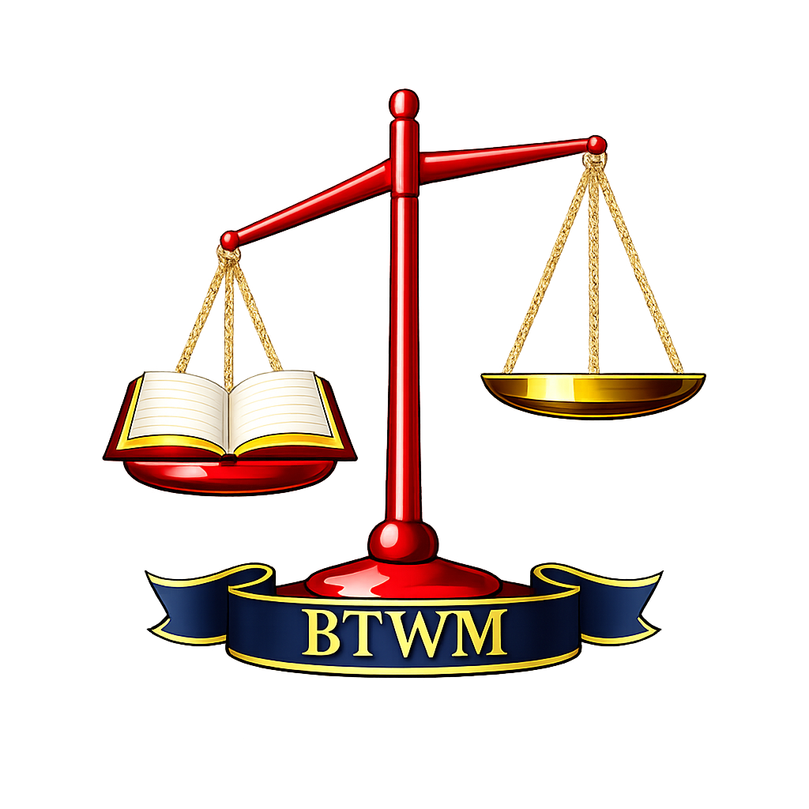

Balancing the Word Ministry
Build • Educate • Disciple
The New Commandment
Jesus’ final command reveals the defining mark of true discipleship...

Build • Educate • Disciple
Jesus’ final command reveals the defining mark of true discipleship...